De cero al robot
conectado en 30 min.
Guía completa con capturas reales. Seguí los pasos en orden.
Pulsá en "Open Account"
Entrá al sitio de Axi y pulsá el botón Open Account para iniciar el registro del broker.
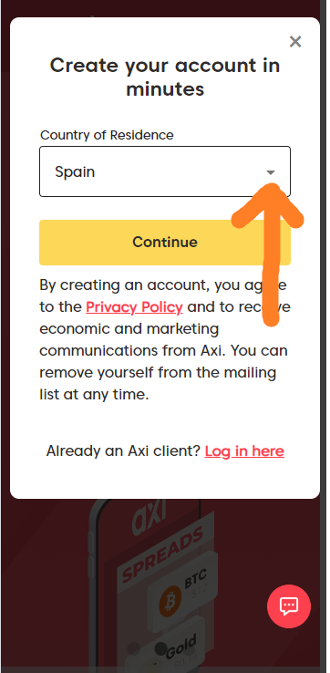
Seleccioná tu país de residencia
Esto determina la entidad legal y los documentos que te pedirán para el KYC.
Email + contraseña del broker
Introducí un email, creá una contraseña, aceptá los términos y continuá.
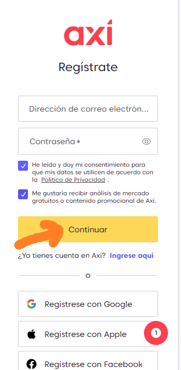
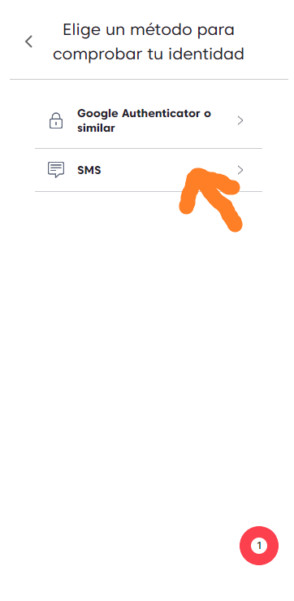
Código de seguridad por SMS
Elegí la opción SMS para recibir el código de verificación en tu móvil.
Introducí tu número de teléfono
Escribí tu número con el prefijo internacional correcto.
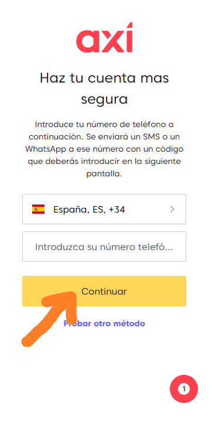
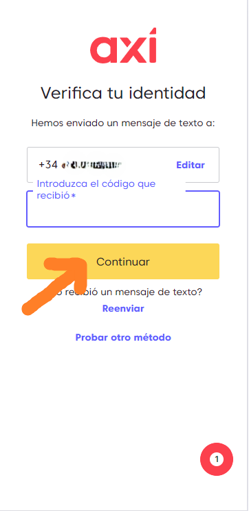
Confirmá el código recibido
Te va a llegar un código por WhatsApp o SMS. Escribílo para confirmar y la cuenta queda creada.
¡Cuenta creada!
Aparece una pantalla de bienvenida. Pulsá continuar para empezar a rellenar tus datos.
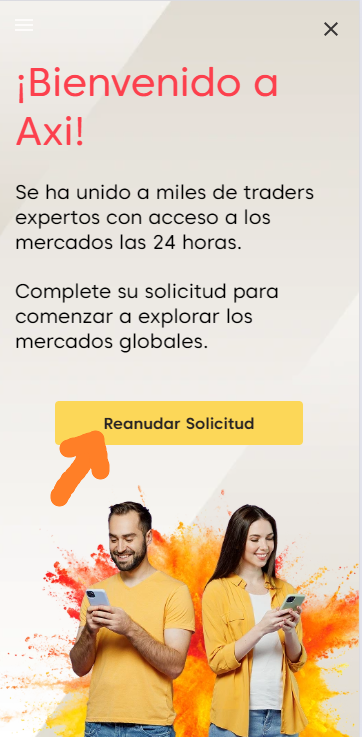
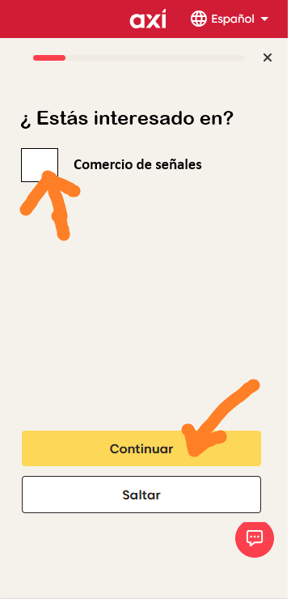
Cualquier opción sirve
Te van a preguntar sobre experiencia o preferencias. Podés elegir cualquier opción — no afecta al robot RICX.
Saltar este paso
En esta pantalla pulsá Saltar para avanzar directamente a la configuración MT4.
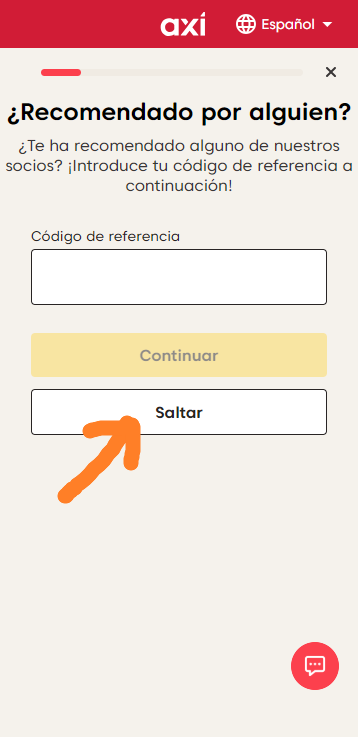
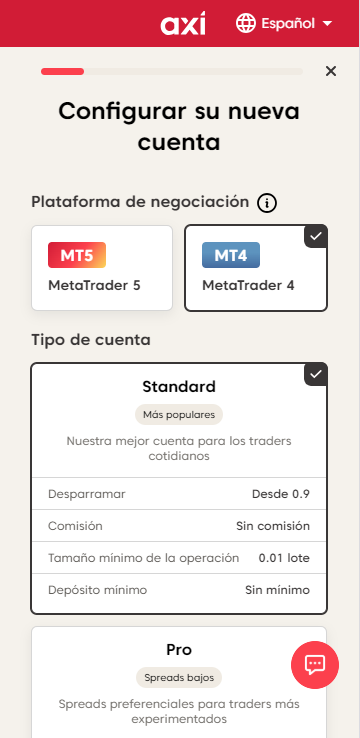
Seleccioná MT4 + cuenta Standard
▸ Plataforma: MetaTrader 4 (MT4)
▸ Tipo de cuenta: Standard
Desmarcá "Axi Select" y creá la cuenta
Bajá la página hasta ver la opción Axi Select. Desmarcala y pulsá Crear cuenta.
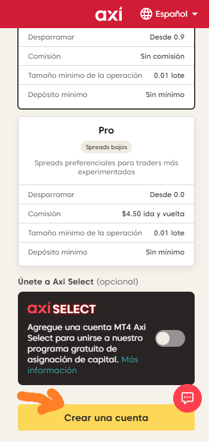
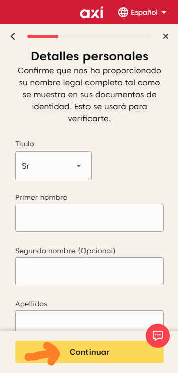
Rellená tus datos personales
Axi te va a pedir dirección, ocupación, ingresos, experiencia. Rellená con información real — el broker verifica estos datos.
Verificación KYC — documento
Iniciá la verificación KYC. Necesitás tu pasaporte o DNI y hacerte un selfie. La aprobación tarda 1-48 horas.


Escogé el tipo de documento
Pasaporte, DNI o carnet de conducir según tu país.
Escaneá el anverso
Capturá la cara frontal del documento con buena iluminación y foco.


Escaneá el reverso
Capturá también la parte trasera del documento (si aplica).
Hacete un selfie
Por último, un selfie para confirmar que sos vos quien abre la cuenta.


KYC enviado — esperá confirmación
Vas a recibir un correo cuando la verificación esté aprobada (normalmente entre 1 y 48 horas).
Bajá hasta el pie de página
En la pantalla de configuración, desplazate al final para encontrar el campo de texto a completar.
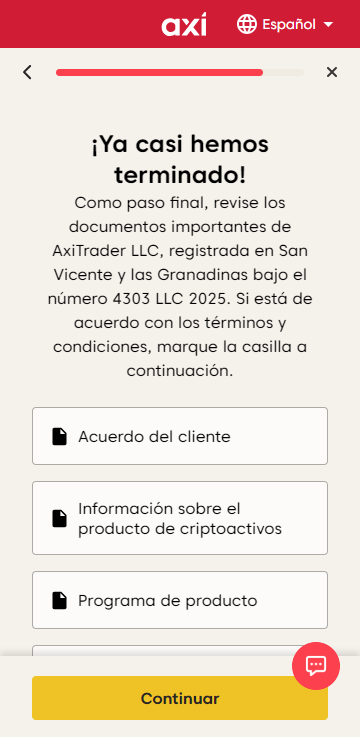
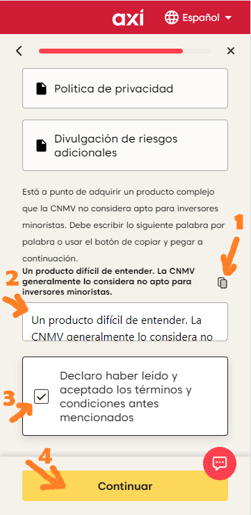
Copiá, pegá, aceptá términos
① Pulsá en Copiar. ② Pegá el texto dentro del rectángulo. ③ Marcá la aceptación y continuá.
Divisa + Apalancamiento 1:1000
▸ Divisa: la que prefieras
▸ Apalancamiento: 1:1000 (requerido por RICX)
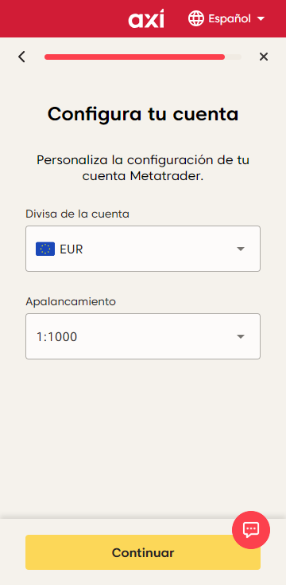
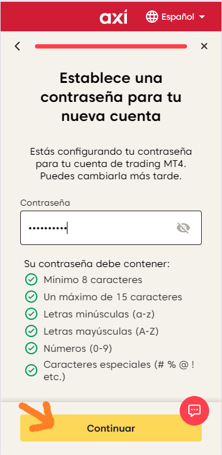
Creá la contraseña MT4
Creá una contraseña específica para la cuenta MT4.
Cuenta "pendiente" — esperá unos minutos
La cuenta de trading aparece con estado Pendiente. Es normal — tarda unos minutos en activarse.
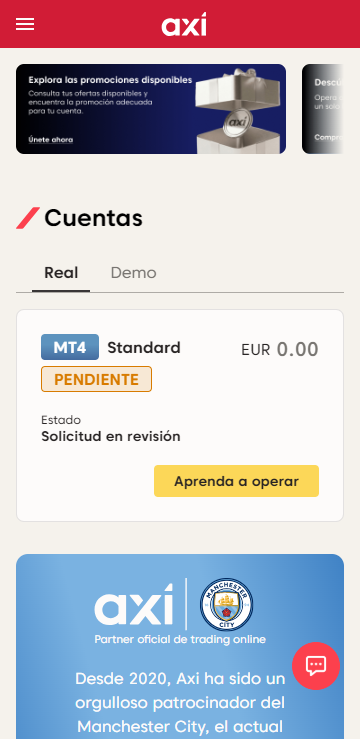
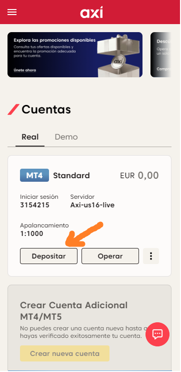
Cuenta activa — ya podés depositar
Cuando el estado cambia a activa, pulsá Depositar para ingresar fondos.
Depósito mín. USD 1.500 + guardá tus credenciales
Depósito mínimo recomendado: USD 1.500. Pulsá Cambiar contraseña y guardá estos 3 datos:
▸ Iniciar sesión (nº MT4)
▸ Servidor
▸ Contraseña MT4
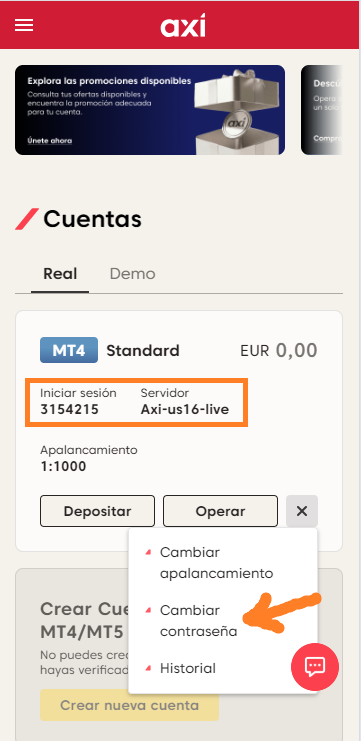
Descargá la app Axi CopyTrading
Instalala gratis en tu smartphone. Disponible para iOS y Android. Desarrollada por Pelican Trading.
Creá una cuenta NUEVA en la app
Abrí la app y pulsá Crear cuenta (no "Iniciar sesión"). Introducí un email y creá una contraseña nueva. Aceptá los términos.
Confirmá tu correo electrónico
Después de registrarte, la app te envía un correo de verificación. Abrí tu bandeja de entrada (y spam si no aparece), pulsá el enlace y la cuenta queda activada.
Iniciá sesión con las credenciales nuevas
Volvé a la app y entrá con el email y contraseña que acabás de crear. Ya estás dentro — listo para vincular tu cuenta del broker en la siguiente pestaña.
Pestaña "Cuenta" → "Conectar una cuenta"
En la app Axi CopyTrading, andá a la pestaña Cuenta (ícono abajo a la derecha). La app va a pedir vincular una cuenta de trading. Tocá el botón amarillo Conectar una cuenta.


"Copiar operaciones de proveedores de señales"
Aparece un menú con dos opciones. Seleccioná la primera: Copiar operaciones de proveedores de señales. Esta es la correcta para seguir al robot RICX.
Ingresá los datos MT4 del broker Axi
▸ Servidor: seleccioná el servidor Axi
▸ Nº de cuenta: el número MT4 (paso 25 de la pestaña ①)
▸ Contraseña: la contraseña MT4 (paso 22 de la pestaña ①)


"Completar la evaluación" en Descubrir
En la pestaña Descubrir, la app va a requerir que completes una evaluación de riesgo antes de ver las estrategias. Tocá Completar la evaluación.
Completá el perfil de riesgo
Respondé las preguntas de forma honesta. Ejemplos típicos:
▸ Expectativas pérdida/ganancia: 70% / 30%
▸ ¿Usaste robots antes? No (o Sí si aplica)
▸ Sector de actividad: el tuyo real

Buscá "RICX" en Descubrir
En la pestaña Descubrir, tocá la barra de búsqueda y escribí RICX. El robot aparece como primer resultado. Tocalo.


Mirá los resultados y tocá "Copiar"
La página de RICX muestra los resultados reales: retorno acumulado, gráfico de crecimiento y P/L. Confirmá y tocá el botón amarillo Copiar.
Tocá "Tamaño de la operación"
La comisión de rentabilidad es del 25% (solo sobre ganancias). Tocá Tamaño de la operación para abrir las opciones.


"Proporcional a Balance" — Proporción 1
Elegí Proporcional a Balance y mantené la proporción en 1. Es el modo más seguro — ajusta el tamaño al capital.
Bajá y tocá "Aceptar y Copiar"
Bajá la pantalla para ver el botón final. Cuando estés listo, tocá Aceptar y Copiar.


Confirmá la autorización — "Ok"
La app muestra el contrato de autorización del Social Trading. Las casillas ya están marcadas. Tocá Ok para continuar.
Aviso de riesgo — "Sí"
Aviso final de compliance. Confirmá que entendés los riesgos y tocá Sí.


✅ ¡Éxito!
El mensaje Éxito confirma que tu solicitud para copiar automáticamente las operaciones de RICX fue aceptada. Tocá Ok.
Cuenta conectada — Estado: CONECTADO
La cuenta aparece con estado Conectado y la señal RICX asociada. A partir de ahora el robot copia automáticamente todas las operaciones. Seguí los resultados en la pestaña Copias.